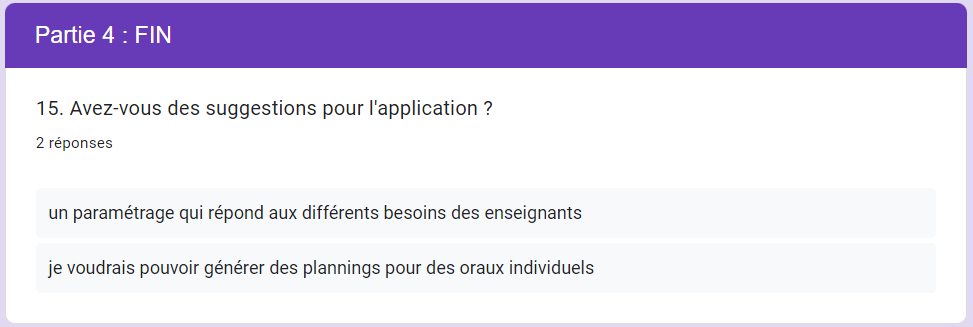

Preuves
S1.05 Recueil de besoins
Faire le recueil du besoin d'une appli de génération de groupe et planning
Avec des entretiens clients, questionnaire utilisateurs, création de personna et maquettage.
Quelque exemples de question et réponse présente dans notre questionnaire.

.xlsx.png)
SAE 2.05 Gestion d'un projet
Regroupe le travail de groupe de deux projets d'école avec la même équipe.
Ce projet correspond au 5 Composantes essentielles.
Il correspond aussi a l'Apprentissages critiques Appréhender les besoins du client et de l’utilisateur.